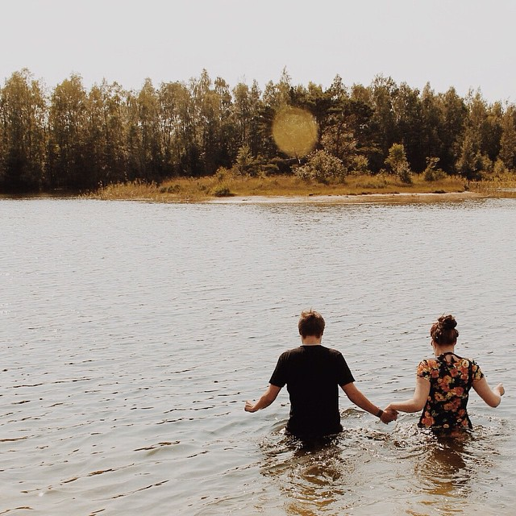
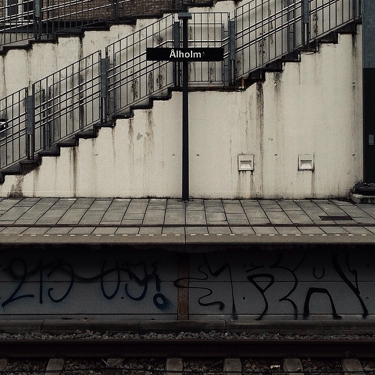
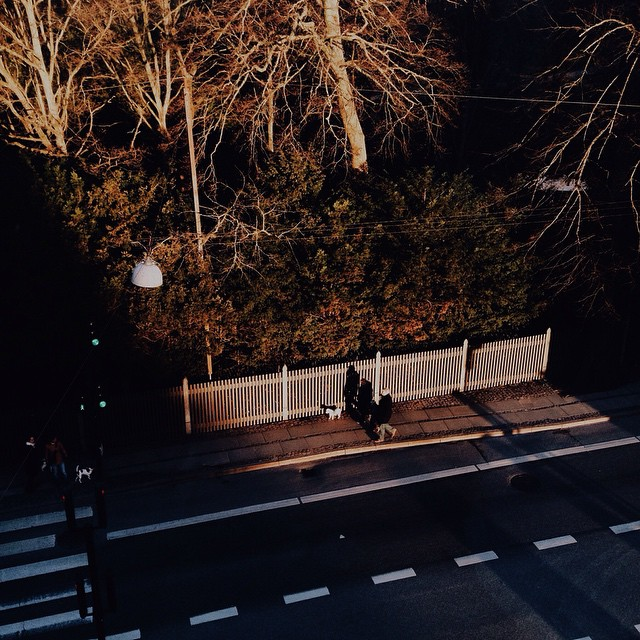
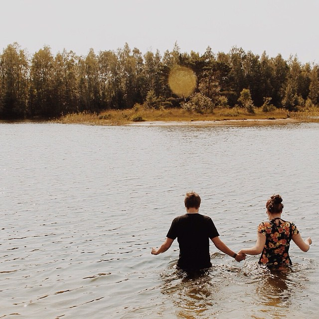
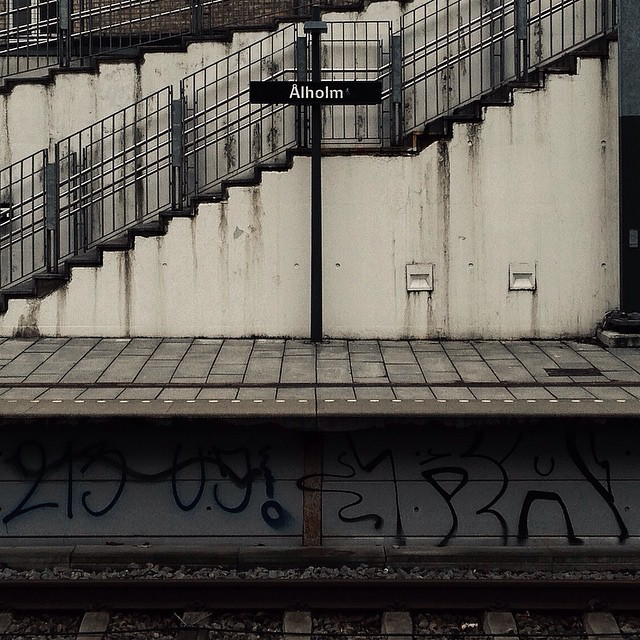
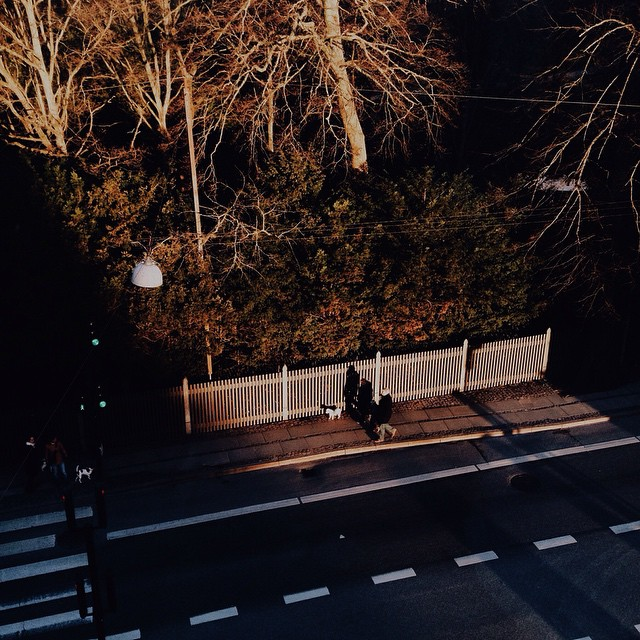

Om mig
Mit arbejde foto, design og grafik starter i de sidste timer af 2014.
I mange år har jeg taget billeder og elsket at arbejde med at redigere dem på alle mulige måder. Min mobil er ved randen af billeder og ved en eftertælling tidligere i december har jeg mellem 25 og 30.000 billeder liggende fordelt på min computer og diverse eksterne harddiske, men næsten ingen af dem er nogensinde set af andre end mig. På de sociale medier er det billeder med vennerne og fest billeder der bliver postet.
Så nytårsaften kigger jeg på min instagram profil hvor der ligger i retningen af 150 billeder og mit nytårsforsæt bliver således at der for enden af året skal være 1000 billeder på min profil. Det er 800 billeder på ét år, eller ca. 2,2 billeder om dagen, hvilket måske virker overskueligt, men når hvert billede skal være unikt så begynder det at blive en prøvelse.
Jeg lærte rigtig meget helt intuitivt det år om lys, komposition og billedredigering, og især lærte det mig noget om æstetik, og æstetiske virkemidler.
 




